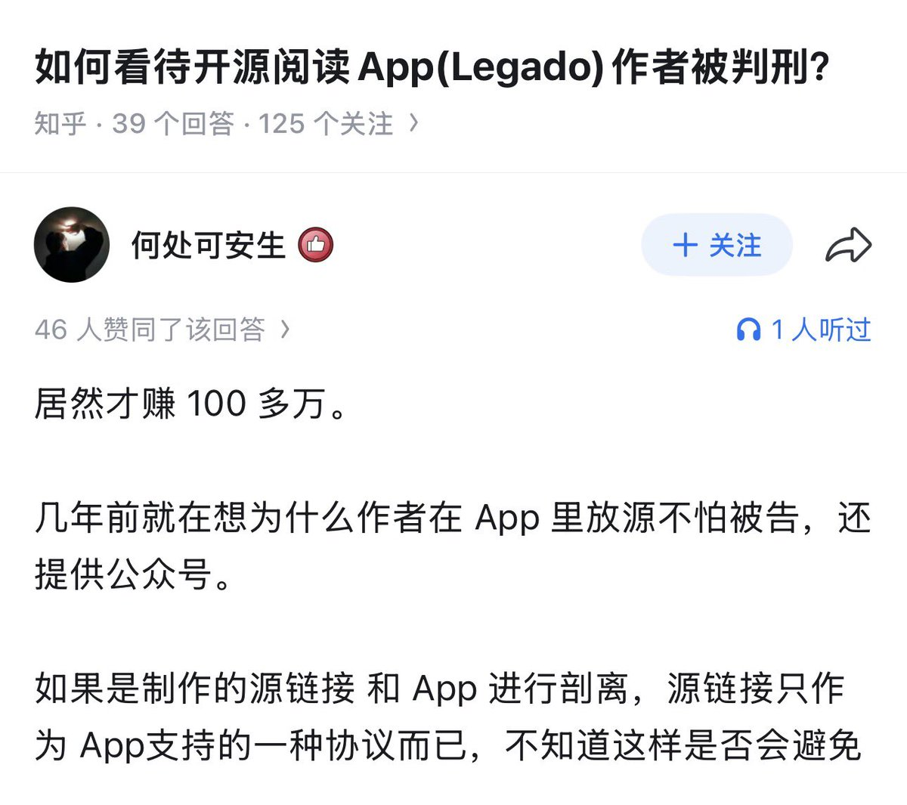

珑梦
@xyu1182202
@syhily 不开公众号就好了😆

Yufan Sheng
@syhily
想起四年前喝茶的经历。当时我爱囤书，写了爬虫 bookhubter 去盗版书网站下载去重了 12 万本 EPUB，并且把当时的 Anna Archive 里面的中文书都囊括了。
然后我搭建了一个电子书网站供别人免费下载。因为幼稚言论被国安顶上，然后以盗版书为由联合执法。
万幸没有盈利，否则最后不是罚一万块了事。 https://t.co/ENEX0QnDVp